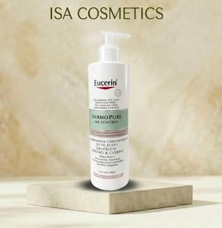
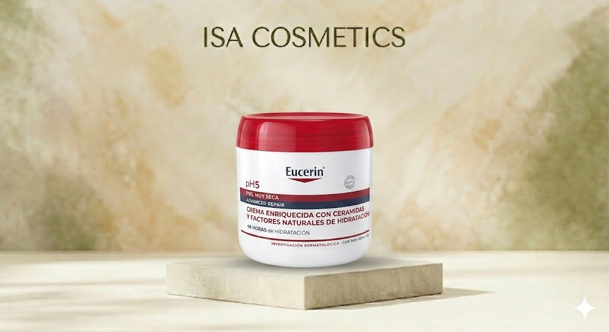
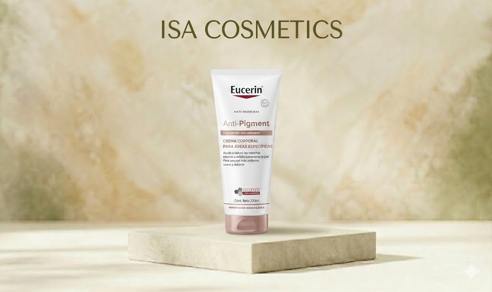

Cantidad: 400ml. Utilidad: Un limpiador potente para el rostro y el cuerpo que reduce imperfecciones, marcas post-acné y brillos gracias al 2% de Ácido Salicílico. Para quién: Personas con piel grasa o tendencia acneica que presentan marcas y exceso de sebo tanto en la cara como en zonas como la espalda o el pecho.
Bs 220 Consultar por WhatsApp
Uso y beneficios: Proporciona 48 horas de hidratación profunda. Su fórmula avanzada con Ceramidas y Factores Naturales de Hidratación (NMF) fortalece la barrera de la piel para prevenir la pérdida de humedad y mejorar la textura cutánea. Para quiénes: Personas con piel muy seca y sensible que requieren una reparación intensiva y alivio inmediato de la tirantez. Cantidad: 450 ml / 454 g. Valor: Alta especialización dermo-farmacéutica; excelente para restaurar la salud de pieles comprometidas.
Bs 320 Consultar por WhatsApp
Uso y beneficios: Formulada con Thiamidol patentado, actúa desde la raíz para reducir manchas oscuras y prevenir su reaparición. Además, exfolia suavemente la piel para lograr un tono más uniforme, suave y radiante. Para quiénes: Personas con hiperpigmentación en zonas específicas del cuerpo (como codos, rodillas o axilas) que buscan unificar el tono de su piel con respaldo dermatológico. Cantidad: 200 ml. Valor: Tratamiento dermo-cosmético especializado de alta eficacia clínica para el control de manchas.
Bs 320 Consultar por WhatsApp